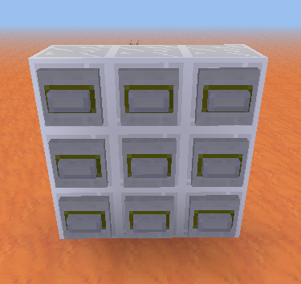
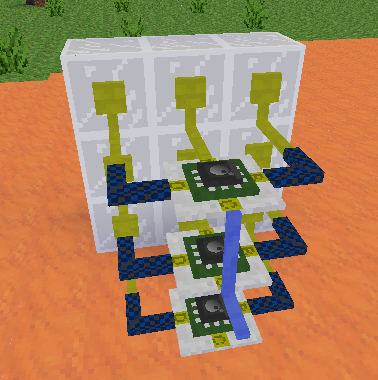
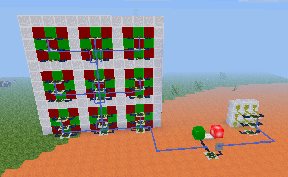
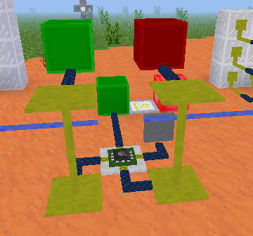
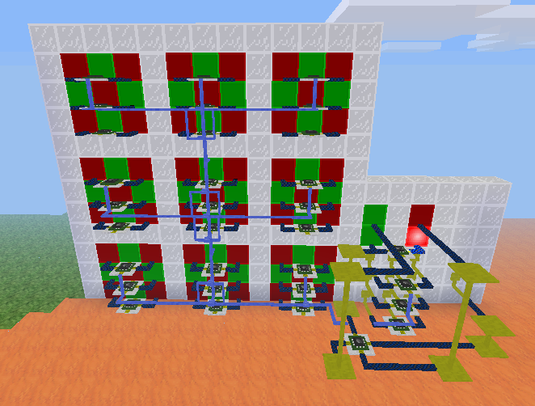

Mesecons Laboratory
Adventures in digital circuitry.
Tic-Tac-Toe Machine
16/3/13 - Uberi
Difficulty level:


 (5/10)
(5/10)
This article assumes you have the Digilines mod, which I generally consider a de facto part of Mesecons. It is still possible to complete it without this mod, but replacing its functionality with fancy wiring is an exercise left to the reader. Having WorldEdit is helpful as well.
Unless you've been living under a rock five hundred meters below the surface of Europa, you've probably heard of tic-tac-toe. Maybe. In any case, I won't be explaining how it's played; if you care to refresh your memory, here's a lovely Wikipedia article. Better? Better.

This article is a work-in-progress! Check out some of the other articles at the homepage!
Tic-tac-toe is a nice game to build - the rules are quite simple, so we can focus more on the aesthetics and design rather than worrying about the little details.
Step 1: Design
Let's figure out what we want by the time the build is done:
- A screen that shows the current state of the game - the three by three grid of X's, O's, or blank.
- A way to actually enter moves into the game.
- A turn system, which only allows one player to move at a time, and alternates between the two players.
In the interests of simplicity, we will be building each component separately. In the end, everything will be linked together to make the final game.
Step 2: Creating the screen
The screen is a good place to start. After all, it's where players will check on their progress. We want to make the screen as seamless and useful as possible.
The screen will have nine cells in total, and each cell needs to be able to display either an X, an O, or a blank space. Here's the design that I used:

Now to add the control mechanism. We want a nice, simple interface that lets us set the value of any cell. For that, I'm going to set up some Luacontrollers and wire them together with digilines:

The top and bottom Luacontrollers have the following code:
if event.channel == "set11" then
if event.msg == 1 then
port.a, port.b, port.d = false, true, true
elseif event.msg == 2 then
port.a, port.b, port.d = true, false, false
else
port.a, port.b, port.d = false, false, false
end
elseif event.channel == "clear" then
port.a, port.b, port.d = false, false, false
end
The middle one is similarly programmed, except with reversed patterns for X and O:
if event.channel == "set11" then
if event.msg == 1 then
port.a, port.b, port.d = true, false, false
elseif event.msg == 2 then
port.a, port.b, port.d = false, true, true
else
port.a, port.b, port.d = false, false, false
end
elseif event.channel == "clear" then
port.a, port.b, port.d = false, false, false
end
You'll notice that the cell now responds to a digiline signal on the "set11" channel. The channel message, being one of the numbers 0 to 3, set the cell to blank, X, or O, respectively.
Before we continue, I should explain the way the screen works. The idea is that there is a single digiline conduit leading out of it, on which you can send a digiline signal "1" on channel "set23" and have the cell in column 2, row 3 be set to X (remember, 0-3 denotes blank, X, and Y, respectively).
We now have the smallest possible cell that can display all the symbols we want, only 3 by 3 by 3! Let's build 8 more of them:

I also added a border, so the players can distinguish between individual cells, and wired together the digilines for each cell. Now we can control the whole screen using only one digiline!
Now we program each Luacontroller to respond on its own channel. For example, the bottom-right one in the image would respond to signals on the channel "set11", and the top-left would respond on the channel "set33". The numbers go from right to left and top to bottom, since in the image we are looking at the back of the screen. For example, the code for the middle Luacontroller in the left-center cell appears as follows:
if event.channel == "set32" then -- <<<<<< THIS PART WAS CHANGED
if event.msg == 1 then
port.a, port.b, port.d = true, false, false
elseif event.msg == 2 then
port.a, port.b, port.d = false, true, true
else
port.a, port.b, port.d = false, false, false
end
elseif event.channel == "clear" then
port.a, port.b, port.d = false, false, false
end
The only thing changed from the original cell is that "set11" has been replaced by "set32" in the Luacontrollers, representing column 3, row 2.
Step 3: Creating the keypad
A tic-tac-toe screen is pretty neat, but it's not very useful unless the game is actually playable. The next component we need is a keypad, where we can enter the moves. You can go about this in two main ways - one keypad for both players, or two keypads, one for each player. I decided to go with one keypad for simplicity reasons:

Now to wire the back up. I connected each button to a port of a Luacontroller, which sends a digiline signal on the channel "press" with the message being the column and row index, such as "12" to represent column 1, row 2:
Port A is facing the steel block wall.
The top Luacontroller has the following code:
if event.type == "on" then
if event.pin == "A" then
digiline_send("press", "32")
elseif event.pin == "B" then
digiline_send("press", "31")
elseif event.pin == "D" then
digiline_send("press", "33")
end
end
The middle Luacontroller has the following code:
if event.type == "on" then
if event.pin == "A" then
digiline_send("press", "22")
elseif event.pin == "B" then
digiline_send("press", "21")
elseif event.pin == "D" then
digiline_send("press", "23")
end
end
The bottom Luacontroller has the following code:
if event.type == "on" then
if event.pin == "A" then
digiline_send("press", "12")
elseif event.pin == "B" then
digiline_send("press", "11")
elseif event.pin == "D" then
digiline_send("press", "13")
end/join #a
end
As you can see, each Luacontroller is responsible for one row of buttons. When a button is pressed, a digiline signal is sent identifying which button it was.
Step 4: Creating the master controller
A technique that is useful with circuits that have many components is to build each part separately, each with an interface, and then connect them all together at a "hub", which manages everything at the highest level. This is what we'll be doing here. The hub is responsible for a few things:
- Recording the moves each player makes.
- Checking for win conditions and displaying winners.
- Showing who's turn it is while playing.
- Sending the reset signal when necessary.
Let's add a Luacontroller off to one side, and program it so that it does what it's supposed to:
mem.map = mem.map or {{0, 0, 0}, {0, 0, 0}, {0, 0, 0}}
if event.channel == "press" then
x, y = tonumber(event.msg:sub(1, 1)), tonumber(event.msg:sub(2, 2))
value = port.a and 2 or 1
m = mem.map
prev = m[x][y]
m[x][y] = value
if (m[1][1] == m[1][2] and m[1][2] == m[1][3] and m[1][1] ~= 0)
or (m[2][1] == m[2][2] and m[2][2] == m[2][3] and m[2][1] ~= 0)
or (m[3][1] == m[3][2] and m[3][2] == m[3][3] and m[3][1] ~= 0)
or (m[1][1] == m[2][1] and m[2][1] == m[3][1] and m[1][1] ~= 0)
or (m[1][2] == m[2][2] and m[2][2] == m[3][2] and m[1][2] ~= 0)
or (m[1][3] == m[2][3] and m[2][3] == m[3][3] and m[1][3] ~= 0)
or (m[1][1] == m[2][2] and m[2][2] == m[3][3] and m[1][1] ~= 0)
or (m[3][1] == m[2][2] and m[2][2] == m[1][3] and m[3][1] ~= 0) then --check win
if mem.won then
m[x][y] = prev --restore value
else --just won
if value == 1 then --player 1 wins
port.c = true
else --player 2 wins
port.d = true
end
mem.won = true
digiline_send("set" .. x .. y, value)
end
else
port.a = not port.a
digiline_send("set" .. x .. y, value)
end
elseif event.type == "on" and pin.b then
mem.map = nil
mem.won = nil
port.a = false
port.c, port.d = false, false
digiline_send("clear")
end
I've sparsely commented the code, but pin B clears everything, port A is the current turn (off for player 1, on for player 2), and port C and D represent whether player 1 or 2 has won, respectively.
Putting this off to one side, we'll wire it all together with digilines, each component to the master controller:
The button is connected to pin B, so it will cause the machine to reset. The digilines from each part are connected to the master controller. To prevent the messages from the keypad interfering with the screen, separate the digilines so that the "press" signals don't get sent there.
Now just wire up the winner indicators. As mentioned before, these are on port C and D:
Step 5: Improvements
Congratulations! You have a working tic-tac-toe machine!
But that looks a little bit messy. I'm sure you can make it look a lot neater:
Here I put the win indicator lights above the turn lights, and compacted the wiring a lot. Also, a nice seamless front panel with signs explaining how to operate the machine.
Compaction is done simply by moving the parts, which are quite compact by themselves, closer together, to make a smaller overall circuit. The result is a nice thin display, with a tiny control unit off to one side. Not to mention an interesting showpiece to have in your game world.
Downloads
All files are available under the same license as this article. The WEM schematics can be loaded using the //metaload command in WorldEdit.
Tic-tac-toe machine in WorldEdit-Meta format (WEM)

This work is licensed under a Creative Commons Attribution-ShareAlike 3.0 Unported License.